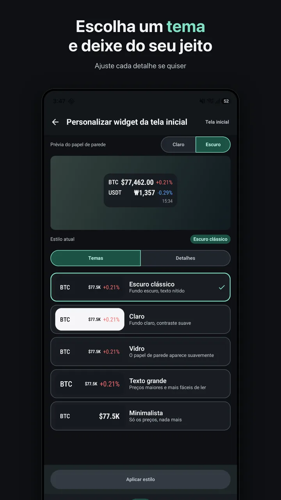
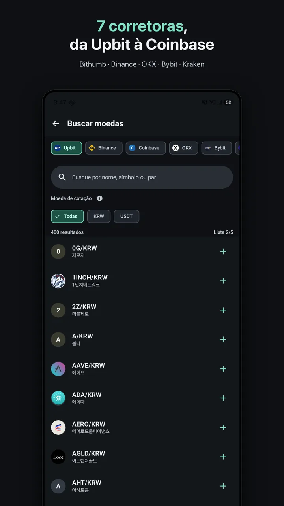
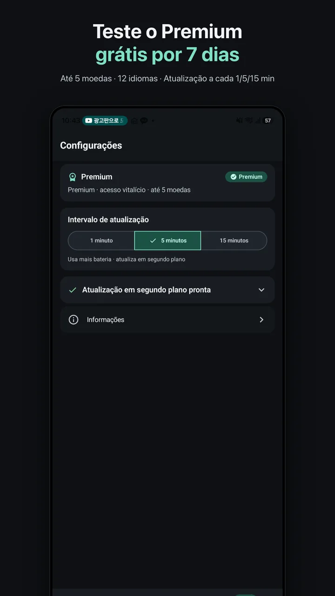

AOD e tela de bloqueio
- Widgets 1×1 e 2×1, uma moeda em cada
- Continua atualizando com a tela apagada
- Se a atualização falhar, mostra o último preço e o horário
Para celulares Galaxy
Veja Bitcoin, Ethereum e outras moedas num relance, mesmo com a tela apagada. Sem desbloquear, sem abrir app.

Adicione moedas: escolha uma das 7 corretoras e busque pelo nome ou símbolo.
Coloque o widget na tela de bloqueio e no Always On Display (Configurações → Tela de bloqueio e AOD → Editar tela de bloqueio → Widgets) ou na tela inicial.
Escolha a frequência: a cada 1, 5 ou 15 minutos. Toque no widget para atualizar na hora.
Os widgets da tela de bloqueio e do AOD precisam de um Galaxy com One UI 7 ou mais recente. Em outros celulares Android, só o widget da tela inicial funciona.




Compra única, sem assinatura
Preços cripto mesmo com a tela apagada: widgets na tela de bloqueio, AOD e tela inicial.